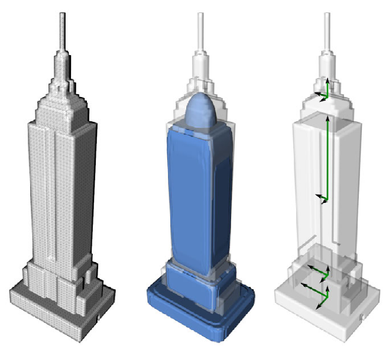

# load model
model1 = "data/2012 BMW 1M.glb"
model2 = "data/big_soviet_panel_house_lowpoly.glb"
model3 = "data/griveous bust.glb"
model4 = "data/pixui2.glb"
scene = trimesh.Scene()
shapes = []
number_of_points = 6
inlier_threshold = 0.1
number_of_trials = 10
#trimesh.util.attach_to_log()
mesh = trimesh.load(model4, force='mesh')
scene.add_geometry(mesh)Literature
Important Papers I have read on the topic
Non-Realistic Object Stylization
The paper describes a method for creating stylized geometry for pre-segmented input models. It uses an initial shape analysis step to find the type of fill pattern and its orientation to be used. In an interactive process the user can then choose a fill pattern for each segment. In a clipping stage the fill pattern is then clipped against the model boundary and all segments are assembled into a complete model.
Shape Analysis
The shape analysis is the most interesting part here, it consists of Random Sample Consensus (RANSAC), which helps to determine the best-fitting primitive shape such as a box-, ellipsoid- or a cone-like structure. It uses a limited amount of vertex samples per iteration to find a primitive shape that is most similar to the shape of the segment.
Principal Component Analysis (PCA) is to determine the axes of maximum variance of the vertex coordinates and computes 3 main axes as well as the ratio of variance between these. This allows to orient the primitives that are fit to the model and help select an appropriate fill pattern.
When both methods are combined good selections for fill patterns can be made that can also be oriented and distributed optimally within the model.

Schematic diagram from the paper that shows the outcome of RANSAC and PCA. While the input mesh is given on the left, the center illustrates the shapes detected with RANSAC and the right-hand side points out the main directions of PCA for each segment.
Implementation
In this notebook I implement a demonstration of each of these methods on an input model and then combine both of them to get similar results to those in the paper.
Primitive Fitting with RANSAC
To implement RANSAC for shape fitting we need to be able to load a model.
We also need shapes to fit to the model.
mesh.show()type(mesh)mesh.is_watertightvertices = np.array(mesh.vertices)
verticesransac_bounding_box
ransac_bounding_box (points, n_trials=10, sample_size=6, threshold=0.01)
ransac_cylinder_with_pca
ransac_cylinder_with_pca (points, n_trials=1000, threshold=0.05)
trimesh_scene_with_box
trimesh_scene_with_box (mesh, fit_box)
trimesh_scene_with_sphere
trimesh_scene_with_sphere (mesh, fit_sphere)
trimesh_scene_with_cylinder
trimesh_scene_with_cylinder (mesh, fit_cylinder, height=None)
run_ransac_fits
run_ransac_fits (points, threshold=0.01, n_trials=1000)
ransac_sphere
ransac_sphere (points, n_trials=1000, sample_size=4, threshold=0.1)
# Run RANSAC
fits = run_ransac_fits(vertices, threshold=0.05, n_trials=500)
for name, result in fits.items():
print(f"{name} fit: inliers={result['inliers']} ({(result['inliers']/len(mesh.vertices)*100):.4f}%, fit={result['fit']}")trimesh_scene_with_box(mesh, fits['box']['fit']).show()trimesh_scene_with_sphere(mesh, fits['sphere']['fit']).show()trimesh_scene_with_cylinder(mesh, fits["cylinder"]["fit"]).show()Determining Orientation and Shape Dimensions using PCA
analyze_pca
analyze_pca (points)
# Run PCA
pca_axes, pca_variances = analyze_pca(vertices)
print("PCA Axes:\n", pca_axes)
print("PCA Variance Ratios:\n", pca_variances)set_axes_equal
set_axes_equal (ax)
Set 3D plot axes to equal scale.
plot_mesh_with_pca_and_box
plot_mesh_with_pca_and_box (vertices, pca_axes, fit_box)
plot_mesh_with_pca_and_box(vertices, pca_axes, fits['box']['fit'])